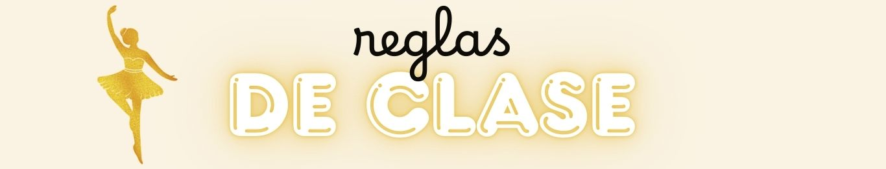

HORARIO DE CLASES
| Lunes | Martes | Miercoles | Jueves | Viernes | Sabado |
3:30pm Mov.Creativo |
3:30pm Baby Ballet |
3:30pm Mov.Creativo |
3:30pm Baby Ballet |
4:00pm Puntas |
10:00am Mov.Creativo |
4:30pm Pre-Ballet |
3:30pm Mov.Creativo |
4:00pm Pre-Ballet |
3:30pm Mov.Creativo |
5:00pm Baby-Ballet |
|
4:50pm Ballet 1 |
4:30pm Pre-Ballet |
4:30pm Ballet 1 |
4:30pm Pre-Ballet |
||
5:30pm Ballet Int/Av |
4:50pm Ballet 1 |
4:50pm Ballet 1 |
|||
5:30pm Ballet Int/Av |
5:30pm Ballet Int/Av |

1. La puntualidad es clave. Llegar puntual a clase es uno de los elementos más importantes para un bailarín. No se trata de llegar
justo al inicio de la clase, sino que es recomendable llegar mínimo 15 minutos antes y aprovechar el tiempo para calentar un poco,
hacer ejercicios de estiramiento, o incluso prepararte mentalmente para rendir.
2. Sé ordenado. Al llegar, asegúrate de mantener tus pertenencias en su lugar, sin que estorben en el salón.
3. La ropa también baila. Sin importar el género de danza que practiques, es importante la vestimenta que uses. Si llevas uniforme,
asegúrate de respetarlo y mantenerlo siempre en buenas condiciones.
4. ¡Apágalo y baila! El teléfono móvil es uno de los temas más discutidos por los maestros. Nunca llegues a clase con el móvil
encendido o asegúrate de ponerlo en vibrador. No solo es una distracción, sino una falta de respeto hacia el maestro y su clase.
5. Shh… Cuando el maestro esté dando una corrección, dicte algún ejercicio o haga algún comentario, asegúrate de guardar silencio
y no interrumpir.
6. Encuentra tu lugar. Cuando eres nuevo (o incluso si ya llevas un tiempo danzando) debes asegurarte de encontrar en el salón
el lugar que más se acomode a ti de acuerdo a tu nivel y tus conocimientos.
6. Encuentra tu lugar. Cuando eres nuevo (o incluso si ya llevas un tiempo danzando) debes asegurarte de encontrar en el salón
el lugar que más se acomode a ti de acuerdo a tu nivel y tus conocimientos.
8. Con permiso. Si por alguna razón llegas tarde a clase, pide siempre permiso para entrar. Lo mismo al terminarse la clase.
9. Advertencia. Si te lesionaste o sientes dolor en alguna parte de tu cuerpo, avísale a tu maestro. Esto es muy importante para que
entienda los motivos por los cuales marcas algún ejercicio o no tomas su clase.
10. No mastiques, apunta. Cualquier estilo de danza requiere un gran esfuerzo físico, por lo cual es muy peligroso mascar chicle
mientras bailas. ¡No lo hagas!
12. Termina y no te desplomes. Cuando te dicten cualquier combinación, siempre termínala de una forma u otra. También, sigue
bailando hasta que el maestro te pare.
Ir al Registro ㅤㅤㅤㅤㅤㅤㅤㅤㅤㅤㅤㅤㅤㅤㅤㅤㅤㅤㅤㅤㅤㅤㅤㅤㅤㅤㅤㅤㅤㅤㅤㅤㅤㅤㅤㅤㅤㅤㅤㅤㅤㅤㅤㅤVolver al Inicio